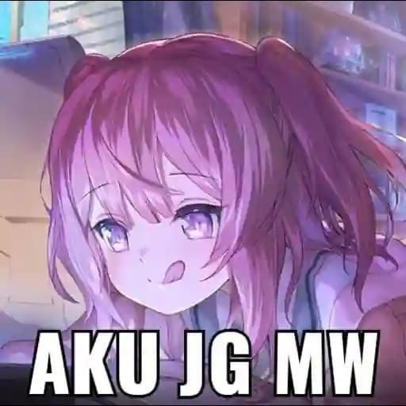

🎬 ANIMEYuru Camp△ ゆるキャン△
12 Episode / Season · C-Station
Level JLPT N5 / N4
Kosakata santai, tempo tenang & dialog harian sangat mudah dipahami
Sinopsis Singkat:
Rin Shima gemar berkemah sendirian di tepi danau berlatar pemandangan Gunung Fuji. Pertemuannya dengan Nadeshiko Kagamihara membuka petualangan berkemah santai bersama klub aktivitas luar ruangan SMA mereka.
💡 Kenapa Anak Nihongo Kurabu Wajib Nonton?
Artikulasi suara karakternya sangat jernih tanpa aksen rumit. Kamu akan belajar banyak kosakata alam, perlengkapan kamping, memasak, dan sapaan sehari-hari dalam konteks nyata yang hangat dan menenangkan.